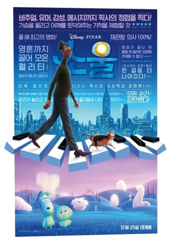

<최근에 본 영화:Soul>

개봉 2021.01.20.
등급 전체 관람가
장르 애니메이션
러닝타임 107분
배급 월트 디즈니 컴퍼니 코리아
소개
뉴욕에서 음악 선생님으로 일하던 ‘조’는 꿈에 그리던 최고의 밴드와 재즈 클럽에서 연주하게 된 그 날, 예기치 못한 사고로 영혼이 되어 ‘태어나기 전 세상’에 떨어진다.
탄생 전 영혼들이 멘토와 함께 자신의 관심사를 발견하면 지구 통행증을 발급하는 ‘태어나기 전 세상’ ‘조’는 그 곳에서 유일하게 지구에 가고 싶어하지 않는 시니컬한
영혼 ‘22’의 멘토가 된다. 링컨, 간디, 테레사 수녀도 멘토되길 포기한 영혼 ‘22’ 꿈의 무대에 서려면 ‘22’의 지구 통행증이 필요한 ‘조’ 그는 다시 지구로 돌아가
꿈의 무대에 설 수 있을까?
느낀점
탄생이전의 세계와 사후 세계에 대한 소재가 신선했고 중간마다 나오는 노래도 좋았고 무엇보다 영혼들이 너무 귀여웠다!!